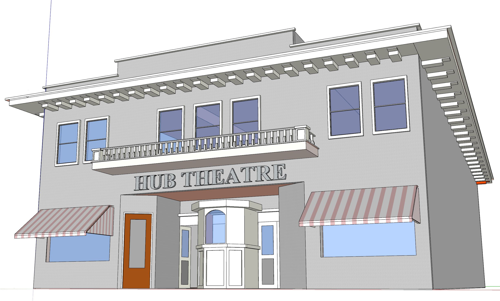
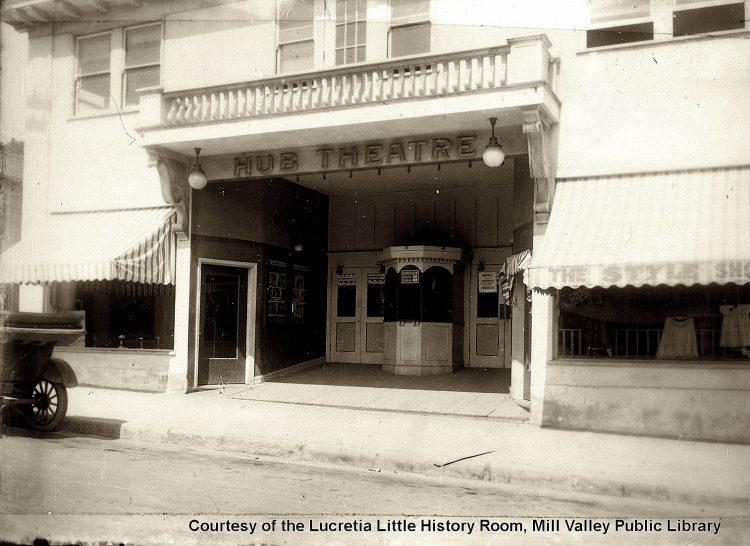

TimeWalk Unity Model
142 Throckmorton Avenue, Mill Valley, CA 94941
The Throckmorton was built in 1915 (originally called the “Hub Theatre”) for showing silent films. It closed in 1929 with sound films having been invented and played at the newly opened Sequoia Theater. In 1952, it was bought by The Odd Fellows Temple, and in 1976, it became a movie theater again. This is where the first of the Mill Valley Film Festivals began. As of 2017, it is used as a theater for live performances.
"This building was called the Hub Theatre when it was built in 1915 as a movie theater showing silent films. Musical accompaniment was in the capable hands of Hattie Thompson at an electrically powered organ. Admission to a Saturday Matinee cost 5 cents. The showing included a Wild West Serial." Source: Mill Valley Historical Society Vignette
 
TimeWalk Unity Model